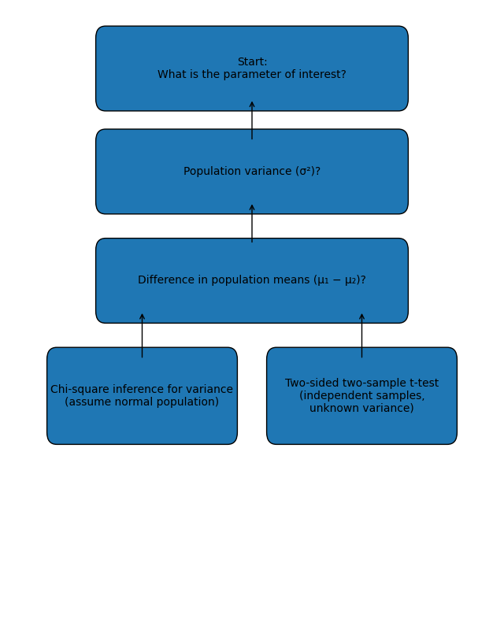
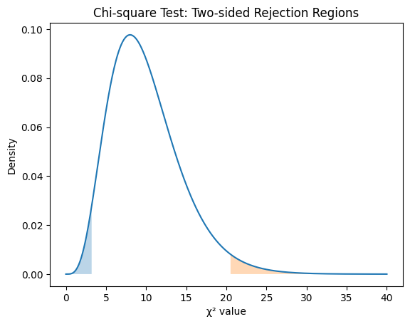
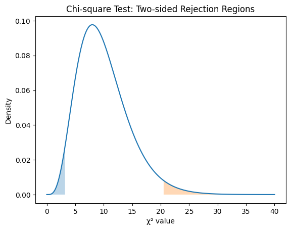

How Do I Choose the Right Test?
Key idea: Start by identifying the parameter of interest, not the formula.
Chi-Square Inference for Variance
When to use:
- Data from a normal population
- Interest in variability (\(\sigma^2\) or \(\sigma\))
Model:
\(X_1, \dots, X_n \sim \text{i.i.d. Normal}(\mu_0, \sigma_0)\)
Test statistic:
\[Q_0 = \frac{(n - 1)S^2}{\sigma^2}\]
 

Tip: Confidence intervals for \(\sigma^2\) are asymmetric because the \(\chi^2\) distribution is skewed.
Two-Sided Two-Sample T-Test
When to use:
- Comparing means of two independent groups
- Population variances unknown
Hypotheses:
\(H_0: \mu_1 - \mu_2 = 0\)
\(H_1: \mu_1 - \mu_2 \neq 0\)
Test statistic:
\[T = \frac{\bar{X} - \bar{Y}}{S_p \sqrt{1/n + 1/m}}\]


Tip: If 0 is inside the confidence interval, the two-sided test fails to reject \(H_0\).
Big Picture Connections
- The \(\chi^2\) distribution arises from sums of squared normal variables
- The \(t\) distribution arises from a normal variable divided by a scaled \(\chi^2\) variable
- As sample size increases, \(t \to \text{Normal}\)
Why this matters: Understanding the distributions explains why the tests work, not just how to compute them.